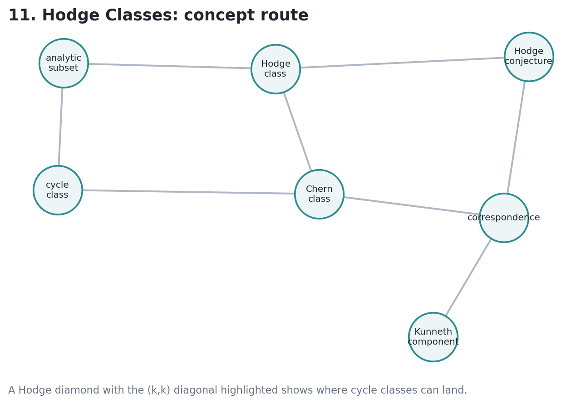
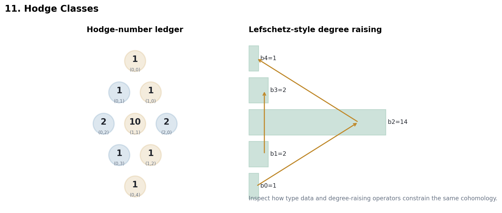

How analytic cycles produce cohomology classes of type \((k,k)\), why Chern classes live on the diagonal, and where the Hodge conjecture turns visibility into a deep algebraic question.
Source span: printed pages 263-289; PDF pages 275-301.

If \(Z \subset X\) has codimension \(k\), its fundamental support determines
after orienting the local normal data and passing through duality.
For a compact Kahler manifold, an analytic cycle of codimension \(k\) has class in \(H^{k,k}(X)\).
Integration over \(Z\) pairs nontrivially only with the complementary Hodge type, forcing the Poincare dual onto the diagonal.
Vector bundles turn holomorphic geometry into stable cohomology classes. In the Kahler setting those classes land exactly where cycle classes are allowed to land.
A rational Hodge class of codimension \(k\) is a class
| Object | Test | Lecture Question |
|---|---|---|
| Analytic cycle | Has geometric support | Where does its class land? |
| Hodge class | Diagonal and rational | Does it come from geometry? |
| Correspondence | Cycle on a product | How does it act on cohomology? |

Generated notebook visual: cycle classes are routed toward the highlighted diagonal bidegrees.
| Degree | Hodge Row | Betti |
|---|---|---|
| 0 | 1 | 1 |
| 1 | 1 1 | 2 |
| 2 | 2 10 2 | 14 |
| 3 | 1 1 | 2 |
| 4 | 1 | 1 |
The toy ledger satisfies Hodge symmetry and keeps cycle classes on diagonal bidegrees.
For a smooth projective complex variety, every rational Hodge class should be a rational linear combination of algebraic cycle classes.
The theorem already gives one inclusion: cycles land among Hodge classes. The difficult direction is to construct cycles from cohomological diagonal data.
For \(\Gamma \subset X \times Y\), a cohomology class on \(X\) is transformed by
\(H^*(X \times Y)\) splits into pieces \(H^a(X) \otimes H^b(Y)\), and a correspondence class can be inspected component by component.
Matrix composition in a toy pull-push model remains associative, matching the operator picture.
Codimension \(k\) means cohomological degree \(2k\), not \(k\).
The conjecture is not known in general; do not treat every Hodge class as already algebraic.
Correspondences carry degree shifts because pull, cup, and push each change the bookkeeping.
Cycle classes give a rigorous route from subvarieties into cohomology, and the Kahler condition places them on the diagonal of the Hodge decomposition.
Hodge classes and correspondences become the language for asking which cohomological features are genuinely algebraic and how they behave under functorial operations.